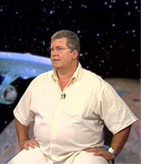
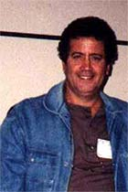

|
Trek
Brasilis - H menos de trs meses voc voltou a dublar
Spock, em uma participao especial para A Nova Gerao.
Mas j faz algum tempo que voc no o dublava, no?
Mrcio Seixas - Acho que estava sem dubl-lo h uns trs
ou quatro anos. Quem fazia o Kirk era o Garcia Jnior, que se
afastou de dublagem para se dedicar assistncia para a
Disney. Ento foi escolhido o Marco Antnio, que o dublador
do George Clooney, para poder fazer o Kirk, e ele fez muito bem.
Essa parceria de dublagem de Jornada aconteceu uns trs
ou quatro anos atrs -- uns quatro anos sem fazer nada do
Leonard Nimoy.
TB - E como foi esse reencontro?
Seixas - Olha, fiquei muito surpreso de ver o Leonard
Nimoy sem aquela interpretao consagrada que ele fez no Spock
de Jornada Clssica. No sei se era o ator ou o
personagem, mas era uma pessoa cheia de inflexes, com reaes
muito humanas. Achei aquilo maravilhoso, e fiz exatamente o que
ele faz, no acrescentei nada. Tenho um respeito to grande
pelo personagem e pelo culto que os trekkers tm pelo
personagem que jamais faria... Dificilmente voc vai ver vcios
de traduo da minha boca, "muito bem", "no
exatamente", "me d um anel quando chegar na
cidade", "e tem mais de onde saram esses", esse
tipo de coisa. Esse vcio de linguagem eu no cometo,
reescrevo o texto. No caso do Spock, at o tradutor era trekker,
ento eu no mudava uma vrgula do texto.
TB - Isso foi uma coisa que quem
comentou tambm foi o Ricardo Juarez, que faz dublagem de Jornada
nas Estrelas - Voyager. Ele disse que a equipe que dirige a
dublagem tem uma preocupao muito grande em manter os
dubladores presos ao texto.
Seixas - Exatamente.
TB - Com relao s cenas que
voc fez, alguma te marcou, impressionou de alguma forma
especial?
Seixas - No, nada me marcou na dublagem que fiz, o que
me marcou foi a interpretao dele completamente diferente.
Fiquei muito atento a tudo que ele fazia. No teve uma cena ou
um dilogo especficos que me chamasse mais ateno. O
trabalho inteiro me chamou ateno, fiquei maravilhado de ver
ele sendo irnico com referncia teimosia do Picard,
perdendo a pacincia com Picard. "A sua teimosia, Picard,
me lembra uma pessoa que eu conheo bem", era o pai dele,
e tem um dilogo at comovente entre ele e o Picard sobre o
pai dele. Olha, foi um trabalho muito bonito, gostei muito de
ter feito e no vou perder de maneira nenhuma, porque quero ver
no contexto como a apario de Spock, no sei se um
combate porque no conheo a histria toda, nesse jogo de
inteligncia e de poder com o Picard.
TB - Como funciona, j que voc
aproveitou para dizer que ainda no teve oportunidade de ver o
episdio, esse esquema para dublagem? Voc recebe o texto, v
uma vez a cena que vai fazer e na sequncia grava?
Seixas - So trs minutos para ver uma cena, ensaiar,
corrigir os erros e gravar. No caso de Jornada, no
existe erro, porque a traduo feita com muito cuidado. Se
tem um trabalho que eu tiro o chapu, pela beleza, pelo
profissionalismo com que ele feito, a traduo do texto.
Todo o trabalho de Jornada feito com muito cuidado, um
trabalho muito recomendado.
TB - At porque existe um carinho
muito especial da equipe de traduo pelo seriado...
Seixas - Ah, claro.
TB - Vamos falar um pouco de
"2001", ano que todo mundo chegou agora, mas que voc
chegou l nos anos 70. Como que foi a dublagem de 2001, que at
hoje a mesma -- o filme nunca foi redublado.
Seixas - uma surpresa, porque normalmente voc pode
ver um filme dublado ou um Raul Julia com a minha voz, mas voc
pode ver o mesmo filme numa TV a cabo dublado por outro dublador.
Isso muito comum, o cliente resolve dublar uma verso para
TV a cabo e no tem interesse em manter a voz, ou no teve
tempo de me procurar, ou a produtora no teve interesse de me
procurar e chama outro dublador para trabalhar. No caso de
"2001", estou achando muito curioso que at agora
ainda mantenham a minha voz, como nos filmes bblicos que fiz
do Charlton Herston. At agora no vi a substituio da voz.
Mas dublar o HAL para mim foi uma agradvel surpresa de um
diretor que tinha talvez dez anos menos experincia de dublagem
do que eu.
Quando comecei a dublar o HAL, nas primeiras cenas, ele parou e
disse assim, "para voc o trabalho est bom?". Basta
essa pergunta para voc olhar para ele com os olhos assim bem
atentos -- uma pergunta dessa no acontece no estdio, voc
chega l, o diretor "briefa" [de "briefing",
significa "instruir"] e voc comea a trabalhar. E
assim foi, quando cheguei para trabalhar, no precisava nem
explicar, eu era apaixonado pelo filme. Ele disse, "olha voc
vai dublar o HAL", falei, "meu Deus, isso um prmio,
no um trabalho".
Chego no estdio, dublo, a l, depois de, acho que duas ou
trs gravaes, ele foi e disse assim, "para voc est
bom?" Eu falei "Torelli, essa pergunta, rapaz, ela
surpreendente, que que ?" "Mrcio, s responda,
voc ouviu a gravao?", "ouvi", "vamos
ouvir de novo", ouvimos, "para voc est bom?"
Falei "olha, vamos fazer o seguinte, eu desisto, que que ,
o que que est havendo? O que que eu fiz?". "Mrcio
voc est dublando um computador, computador no respira,
olha l sua respirao". Eu falei "que coisa, como
que eu no me dei conta disso?"
Ento pra mim foi um dos trabalhos mais difceis que fiz,
porque eu enchia o pulmo para ler o texto e tinha que manter
sempre aquela mesma projeo e ter o cuidado de no
inflexionar muito. Tem dois momentos dessa dublagem que so
para mim, meu Deus, como bom ver aquilo! quando HAL joga
xadrez com um dos astronautas e quando acontece a morte dele
tendo o crebro desligado ali nas clulas.
TB - Qual foi a troca de sensaes
entre ter visto o filme e de repente estar fazendo aquela cena?
Imagino que o toque emocional deve adicionar muito.
Seixas - Sa fascinado pelo trabalho do computador no
cinema, apaixonado pelo HAL, e a recebo, assim de estalo, um
telefonema, falando "olha, vamos dublar '2001' e voc vai
fazer o HAL". Fiquei muito feliz. como te disse, no
foi um trabalho que fiz, foi um prmio que ganhei, que me deram
para dublar. Considero aquilo uma homenagem minha profisso,
minha atividade, ao profissional que sou. Nada melhor do que
dublar uma coisa que voc gosta, conhece, entende, quer dizer,
entende do ponto de vista da histria. Pra mim foi um momento
marcante, inesquecvel da minha vida profissional.
TB - Muitos atores relatam que
quando passam muito tempo com o personagem, acabam ganhando um
alter-ego desse personagem. Gostaria de saber de voc que
acompanha o trabalho de um ator, ou de um personagem, se o
dublador tambm acaba adquirindo maneirismos, um pouco da
personalidade, um alter-ego mesmo dos personagens que ele dubla
e especificamente se voc ganhou alguma coisa do Spock.
Seixas - No, no, muito bom me projetar em alguns
valores desses personagens que dublo. Por exemplo, adoro o
Leonard Nimoy, j gostava quando ele era um coadjuvante em
"Misso Impossvel". No sei se voc se lembra de
um seriado chamado "Misso Impossvel", com um ator
chamado Peter Graves, que passava na TV Tupi nos anos 60. O
Leonard Nimoy pertenceu srie, depois foram trocando. Eu j
gostava daquela cara dele esquisita, esse cara tem uma cara
esquisita, no um ator americano comum, no tem cara nem de
americano, que cara engraada que ele tem. Sempre tive por ele
uma simpatia muito grande. Dublar o Spock tambm foi outro prmio.
Li o livro dele, conheci muito do ator Leonard Nimoy, tenho um
filme que eu era apaixonado, sem saber que ele tinha sido
diretor, que "Trs Solteires e um Beb". S
fui descobrir que ele era diretor do filme lendo esse livro. No
me identifico com o ator, gosto de alguns valores que eles
passam, gosto de coisas que eles pensam, mas o alter-ego no
muda, porque dublo tanta gente, se eu for adquirir um pouquinho
de cada um desses atores, eu viro uma colcha de retalhos.
TB - Espero que voc no saia de
capa preta de noite, aproveitando a escurido (risos). Do
segundo ano para o terceiro da Clssica, nessa nova
dublagem, houve alguns episdios em que voc acabou no
dublando o Spock. O que aconteceu nesse intervalo, por que
entrou um outro dublador, e como que foi sua volta ao Spock
nos episdios subsequentes?
|
Crdito: USA
(www.usa.tv.br)
|
Seixas - Acho
que no tem quatro anos no, tem menos de quatro anos, estou
me lembrando aqui de alguns fatos, algumas referncias, acho
que tem trs anos. Tenho alguns valores de que no abro mo.
Sou mineiro, filho de mineiro, nascido e criado em Belo
Horizonte, vim para c j pai de filho pro Rio de Janeiro. Um
dos valores que tenho, aprendi com meu pai, que foi uma pessoa
muito simples, que dizia assim, "voc conhece o valor de
um homem pela carteira de trabalho dele". Meu pai, que era
um pequeno empresrio, mas pequeno mesmo, adorava receber, por
exemplo, um pedido de emprego de uma pessoa que, quando mostrava
a carteira de trabalho para ele, tinha s uma assinatura. Ele
achava aquilo um indcio de que houve entre ele e o empregador
uma relao de amizade, de respeito, de compreenso. Cresci
ouvindo isso.
Quando comecei a fazer o Spock, j achei chato ter que dar
minha carteira de trabalho, porque por mim ela s teria a
assinatura das rdios que eu trabalhei em BH, a rdio Jornal
do Brasil, a Herbert Richers e s. Pra mim j estava cheia
demais a carteira. Quando fui fazer Jornada, muito
entusiasmado, no quis questionar muito o fato do [Victor]
Berbara [dono da dubladora VTI-Rio] exigir que os dubladores
fossem registrados em carteira. T bom, fui registrar, enfim,
pra efeito de fiscalizao, e dublamos tudo [que havia sido
pedido, os primeiros 52 episdios]. Acabou o seriado, no tive
mais interesse em continuar trabalhando, deram baixa na minha
carteira, foram sempre muito corretos -- a VTI sempre muito
correta.
Passou o tempo, ento veio a alegria. A tradutora da srie,
Cristina Nastasi, me liga e diz assim, "olha estou te
ligando, o Dr. Victor Berbara est sabendo, pra te comunicar
que est voltando, com o terceiro ano da srie, com tantos
episdios e queremos saber se voc quer fazer o Spock".
Eu falei, "querer? Pelo amor de Deus, no h chance de eu
no fazer". "Mas tem um problema Mrcio, Dr. Victor
mandou avisar que carteira assinada". "No, no
quero no. S vou como eventual, vou, gravo o Spock e vou
embora". "Mrcio, vamos fazer o seguinte, vou sair do
circuito, voc se entende direto com o Victor Berbara".
Victor Berbara me liga. "Mrcio, no way". Nunca vou
me esquecer desse "no way" dele. "No way,
carteira assinada, voc vai dublar o Spock e todos os trabalhos
da casa, durante o perodo que voc estiver dublando o
restante do seriado". Eu falei, "no vou fazer".
Ele falou "ento voc no vai fazer a srie".
"No tem problema, no fao a srie".
E a ficou um dilogo spero, ele uma pessoa muito difcil,
e desligamos o telefone. A gente quase chegou a gritar no
telefone um com o outro. Falei, "caramba, na minha vida
profissional quem manda sou eu, e no Victor Berbara". E
esqueci o assunto. Uma tarde estava em casa, vendo TV, ca em Jornada
nas Estrelas, numa cena em que o Spock est dentro de uma
cadeia com o Kirk, e eu ouo um colega dublar assim "capito,
acho que no temos chance de sair daqui capito!" Peguei
o telefone e liguei para a Cristina Nastasi, e na segunda-feira
para a VTI. Na primeira ligao, quem atendeu disse, "Dr.
Berbara no chegou ainda". Sa para fazer um trabalho,
quando voltei, fui chegando em casa, o telefone tocou, dei um
pulo no telefone, e a secretria disse assim "Mrcio, Dr.
Victor vai falar com voc". "Ah, pois no, pois no".
"Oi Mrcio, como vai tudo bem?" "Oi Dr. Victor,
tudo bem". Eu tinha me esquecido completamente do nosso dilogo
spero. Voc me permita me alongar, porque eu preciso que voc
saiba os detalhes disso, t?
TB - Claro, vai l.
Seixas - Se tiver tempo...
TB - Sem problemas, pode falar.
Seixas - Preciso te explicar, porque j falei para a
Cristina que a minha vontade era numa conveno de trekkers
pegar o microfone, aparecer e explicar o que estou explicando
para voc agora. A o Berbara me disse assim, "o que que
eu posso fazer pelo amigo?"
Falei "Dr. Victor, no sbado eu estava vendo Jornada
nas Estrelas, e vi o Spock, eu...", foi s o que
consegui dizer, porque, a partir da, ouvi quase 50 minutos de
ESPORRO. Eu no dizia uma palavra. Ele estava apopltico no
telefone. O culpado era eu, ele me deu todas as chances -- estou
repetindo o que ele falou para mim --, e que agora no
adiantava eu vir chorar no ouvido dele. Depois de 50 minutos de
ouvir esporro, o telefone do lado tocou, e ele disse assim,
"olha, vamos desligar o telefone, que preciso trabalhar e no
tenho tempo a perder, s pra terminar nossa conversa, pra voc
ter certeza do que estou falando, se o Lauro Fabiano
morrer" -- Lauro Fabiano o que dublou esses cinco episdios
--, "nem assim voc vai ser convidado para dublar o Spock.
Tenha um bom dia, abrao".
Desliguei o telefone, estava muito deprimido, liguei para a
Cristina, ela falou, "Mrcio, voc conhece Dr. Victor,
dificilmente ele vai reconsiderar essa posio". Exatos
oito dias depois desse esporro, o telefone toca na minha casa e
fala "Como vai o amigo, tudo bem?"
"Oi Dr. Victor, tudo bem?", "Vamos l dublar o
Spock?" (risos). No acreditei, falei, "ser que
trote? No possvel". "Est bem, Dr. Victor, com
muito prazer". "Traga a carteira de trabalho, ok?"
"T, claro!". Depois fui feito uma criana pra l,
entreguei, e a "como vai o amigo?". Ele no se
lembrava daquele esporro. Voc acredita nisso?
TB - Nossa, no lembrava mesmo?
Seixas - No. Como ele muito esporrento, no se
lembrava de mais um. A fiz uma tentativa. Trabalho no USA, fui
l, falei com o pessoal responsvel pela programao dos
filmes, que eles como clientes tinham o direito de devolver a srie
pra poder trocar a voz, e que eu estava me oferecendo como
dublador do Spock, para refazer o trabalho para o USA, sem
custo. Queria trabalhar sem receber e gravar s a minha parte.
A o Cabral no teve muito interesse, o Berbara tambm no e
ficou nisso. E a ficaram esses quatro ou cinco episdios
dublados pelo Lauro Fabiano.
TB - Certo, agora voc s
trabalha para a VTI como eventual?
Seixas - S como eventual.
TB - E no tem tido mais problema
desse tipo?
Seixas - No, no, no. Foi a nica coisa que
consegui dizer para o Dr. Victor nessa minha volta, porque a
ele aceitou que eu fizesse o Spock, e no mandou levar carteira
no. Pediu, "traga um comprovante" de no sei o qu,
como j tendo recebido e descontado em uma previdncia em
outra empresa, e me deixou trabalhar como eventual. A eu tive
vontade de falar, mas como eu preferia primeiro acabar de dublar
o Spock, "a gente brigou tanto, pro senhor agora permitir
que eu trabalhe sem carteira assinada".
TB - Parece que ele uma pessoa
meio difcil de lidar...
Seixas - Meio no, ele muito difcil, muito difcil.
Agora, muito inteligente, viu? Ele tem um crebro
privilegiado, ele saca das coisas, sabe das coisas.
TB - De toda sua carreira, de todos
os seus personagens, filmes, sries que voc dublou, qual o
preferido?
Seixas - Ah, no tem o preferido, porque tem uns filmes
que eu fiz do Charlton Herston, tem a minha amada Disneylndia,
tem os trabalhos do Leonard Nimoy. Eu tenho um prazer grande,
por exemplo, de dublar o Clint Eastwood. Tenho uma justificativa
para cada um desses trabalhos, ento no tenho um preferido no,
e sim, um grupo de trabalhos que tenho assim, um carinho
especial. E um deles o Spock.
TB - Voc costuma assistir depois
aos trabalhos que faz?
Seixas - Sempre que posso, sempre. Minha mulher detesta,
porque fico assim "meu Deus, porque que no troquei essa
palavra, ficaria to melhor naquele momento do avio",
ela fica p... da vida, ela detesta assistir filme do meu lado,
porque deve de ser muito chato, no ?
TB - Parece um comentrio tambm
tpico de dublador, que normalmente muito perfeccionista,
ele sempre acha que dava pra ficar melhor...
Seixas - Exatamente. A eu falo assim "olha que
besteira, olha aquela boca, meu Deus, eu podia ter pulado".
Enquanto isso o dilogo est rolando, e eu "por que que
eu no usei tal palavra?", meu Deus, ela fica p... da
vida.
TB - Como que voc v
atualmente a dublagem brasileira?
|
Crdito: USA
(www.usa.tv.br)

|
Seixas -
Tomara que eu no seja crucificado pela classe, mas a dublagem
atualmente est indefensvel. Tenho visto trabalhos
deprimentes de to ruins! A que ponto chegou a falta de exigncia
de determinados canais, a falta de conscincia de quem escala
pessoas sem condio de trabalhar. A vou entrar numa esfera
que talvez a gente fique a noite inteira aqui discutindo. No
entenda isto como uma prepotncia da minha parte no, viu? Um
olhar um pouco mais atento no final de semana sobre o que voc
tem dos vdeos, ponha junto TV aberta e TV a cabo, e voc vai
ver coisas agora que, Nossa Senhora! Vi um [programa do canal]
Discovery dublado na Herbert Richers, isso a voc pode
publicar, no tenho o menor medo que as pessoas saibam, uma
garota sendo resgatada de um carro esmagado por um caminho de
lixo. A maneira como a garota foi dublada, me pergunto como
que o Discovery pagou por esse trabalho. Como cliente ela
poderia dizer, "que isso? Vocs esto brincando de
fazer dublagem? Por favor coloquem uma profissional para fazer
essa cena".
uma cena abaixo da crtica, uma adolescente presa nas
ferragens de um carro, aparece depois de recuperada, dando
depoimento, agradecendo aos bombeiros, agradecendo aos paramdicos,
aos primeiros-socorros, e a maneira como ela fala de uma
pessoa que nunca viu dublagem. Como que a Discovery aceita um
trabalho desses?
TB - Voc acha que a falta de exigncia
est nos canais, nas empresas de dublagem ou nos dubladores?
Seixas - Nas empresas de dublagem e em alguns canais de
TV. Especialmente as TVs a cabo, as TVs que passam documentrio.
Nisso estou incluindo People And Arts, Discovery, os canais 52,
47, enfim de um modo geral TVs a cabo.
TB - Isso tem a ver com a natureza
jornalstica do programa, ou seja, o fato de eles no quererem
gastar muito tempo para fazer uma dublagem mais apurada, ou
desleixo mesmo?
Seixas - Tambm. Tem uma inteno de fazer um trabalho
barato e da eles no questionam a qualidade, o importante
para eles fazer um trabalho que custe pouco. Lamentavelmente,
o que vai para o ar dublado um negcio vergonhoso, uma
grande parte do trabalho de dublagem que tenho visto hoje,
principalmente em documentrios para a TV a cabo, so de matar
a gente de vergonha, de to ruins que eles so.
TB - Voc acha que isso prejudica
a imagem da dublagem como um todo, que de repente pode ganhar
potenciais crticos inimigos que no precisaria ter?
Seixas - Exatamente. Aumenta muito a acidez dos
detratores da dublagem. Voc sabe que tem uma parte da imprensa
que condena a dublagem e isso para eles um prato. Sou
obrigado agora a dizer para um jornalista que a dublagem hoje
est indefensvel. Se fosse uma coisa localizada, um
determinado canal, talvez a gente at conseguisse chegar nesse
canal e dizer, "por favor, vocs esto com um trabalho
muito ruim, por favor coloquem uma pessoa responsvel, que
conhea dublagem". Voc nunca vai ver isso numa TV Globo,
na TV do Slvio Santos voc nunca vai ter um trabalho desse,
voc no vai ver um trabalho desse na TV Record, entendeu?
TB - Uma coisa que tem acontecido
de forma recorrente at em Jornada nas Estrelas a
troca de vozes, ou seja, personagens que mudam duas, trs vezes
de vozes, em apenas duas temporadas. Com relao a isso, voc
acha que prejudica um personagem ter vrias vozes?
Seixas - Prejudica muito. O que ouo de reclamao a
respeito do Homer, dos Simpsons. Essa dublagem foi consagrada, a
primeira equipe foi totalmente aprovada pelo pblico, que adora
aquele desenho animado. Meus filhos so telespectadores que no
questionam muito qualidade de dublagem e eram alucinados pelos
Simpsons. Quando houve a mudana do elenco todo eles
simplesmente deixaram de assistir. Veja bem, no estou
criticando A ou B que substituiu o elenco original. Mas enfim,
estava l aquele elenco pronto, eles gostaram, aprovaram aquela
voz, aquele personagem entrou na sensibilidade deles na
primeira, e de repente mudam as vozes, eles perderam
completamente o interesse pela srie, como eu acho que houve um
desinteresse geral, sempre h. Sempre vai se pagar um preo
pela substituio de uma voz consagrada pelo pblico, o
exemplo que voc tem mais doloroso dessa atitude foi com o
Kojak.
TB - Voc gostaria de participar
de uma conveno de Jornada?
 Seixas
- Sim, claro, adoraria. Eu quis at participar de uma uma
vez, quando trouxeram o Sulu, mas acabou no sendo possvel.
Mas eu adoraria poder comparecer.
TB -
Alguma mensagem para os trekkers?
Seixas - Eu admiro e respeito muito essa forma com que os
trekkers cultuam a srie e gostaria de dizer que me sinto em dvida
com eles pelos episdios que acabaram no ficando com a minha
voz e que eu estou disposto a trabalhar de graa, se houver
interesse, para mudar isso.
Entrevista feita
em maio de 2001.
Transcrio por Rosimeire Anne.
Publicada originalmente em 14 de setembro de 2001, como parte
das comemoraes dos 35 anos de Jornada nas Estrelas |